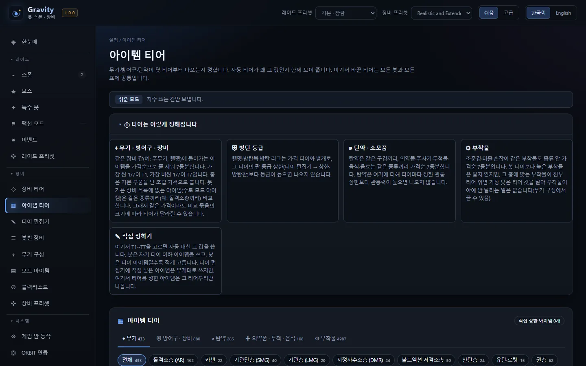
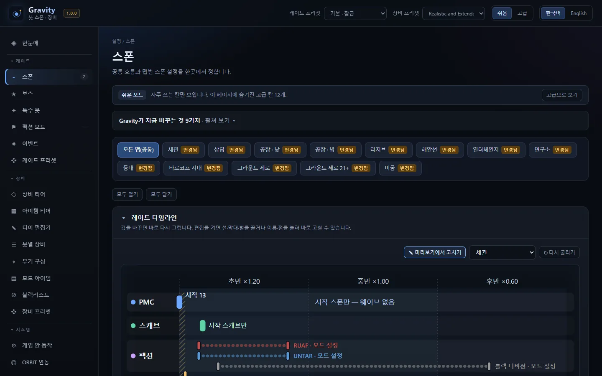
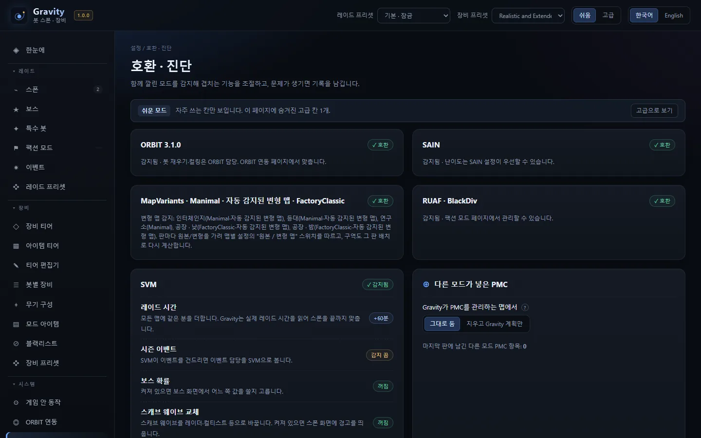

⌁
PMCPMCs
- 레이드 시작 분대 + 웨이브 또는 무한 보충
- 분대 크기·진영 비율, 난이도·레벨 범위
- 레이드 막바지 스폰 중단
- Starting squads plus waves or endless refill
- Squad size and faction mix, difficulty and level range
- Stop spawning near raid end
SPT 봇 스폰·장비 관리Bot spawns & loadouts for SPTv1.0.0 · SPT 4.1
레이드에 누가, 언제, 어디서, 무엇을 들고 나오는지 한 곳에서 정합니다.Decide who shows up in your raids, when, where, and with what gear, all in one place.
서버·클라이언트 모드입니다. 설정은 게임 서버가 켜져 있을 때 브라우저로 여는 웹 화면에서 하고, 저장하면 다음 레이드부터 적용됩니다.A server and client mod. You set everything on a web page that opens in your browser while the game server is running. Save, and it applies from the next raid.

스폰 모듈Spawn module
PMC·스캐브·보스·특수 봇의 수와 시각, 나올 구역을 맵마다 정합니다. 바꾸는 동안 맵마다 예상 PMC·스캐브 수를 미리 보여 줍니다.Set how many PMCs, scavs, bosses and special bots appear, when, and in which zones, per map. While you edit, the page shows the expected PMC and scav count for each map.
맵별 스폰 구역 켜고 끄기, 레이드 전체 그룹 제한, SVM 추가 레이드 시간 감지.Turn spawn zones on or off per map, cap the total number of groups per raid, and pick up extra raid time from SVM.
기본 · 본섭 느낌 · 난전 · 무한 리필 · 시작 스폰만 · 가볍게(저사양). 내 설정을 저장하고 가져올 수 있습니다.Default · Live-like · Chaos · Endless · Start spawns only · Lightweight. Save your own and import others.
장비 모듈Loadout module
봇 레벨로 T1~T7 티어를 정하고, 티어마다 무기·방어구·방탄판 등급·탄약·의약품·부착물을 고릅니다. 설치된 모드 아이템도 함께 다룹니다.Bot level sets a tier from T1 to T7. Each tier picks weapons, armor, plate classes, ammo, meds and attachments. Items from your installed mods are included.

웹 화면The web page
쉬움·고급 두 단계로 볼 수 있고, 한국어와 영어를 고를 수 있습니다. 아래는 실제 화면입니다.Switch between Easy and Advanced, in Korean or English. These are real screenshots.




설치Install
처음 설치하면 기본값으로 동작합니다. 설정 파일은 웹에서 처음 저장할 때 만들어집니다.A fresh install runs on defaults. The settings file is created the first time you save on the web page.
SPT 4.1 폴더에 그대로 풉니다. BepInEx\plugins\Gravity와 SPT_Runtime\user\mods\Gravity가 생기면 맞습니다.Extract into your SPT 4.1 folder. You should get BepInEx\plugins\Gravity and SPT_Runtime\user\mods\Gravity.
서버를 켜고 브라우저에서 https://127.0.0.1:6969/gravity/를 엽니다. SPT 런처의 모드 목록에서도 열 수 있습니다.Start the server and open https://127.0.0.1:6969/gravity/ in your browser, or open it from the mod list in the SPT launcher.
설정을 바꾸고 저장을 누르면 다음 레이드부터 적용됩니다.Change what you like and press Save. It applies from the next raid.
다른 모드와 함께With other mods
감지 결과는 웹의 호환 · 진단 페이지에서 볼 수 있습니다.See what was detected on the Compatibility page.
| 모드Mod | Gravity 동작What Gravity does |
|---|---|
| ABPS | 잠금Locked 스폰 모듈이 스스로 잠기고 스폰은 ABPS에 맡깁니다.The spawn module locks itself and leaves spawns to ABPS. |
| APBS | 잠금Locked 장비 모듈이 스스로 잠기고 장비는 APBS에 맡깁니다.The loadout module locks itself and leaves gear to APBS. |
| SAIN · ORBIT · SVM | 감지Detected 감지해서 맞춰 동작합니다(예: SVM 추가 레이드 시간 반영).Detected and handled (for example, SVM's extra raid time is used). |
| MapVariants · Manimal · FactoryClassic | 감지Detected 변형 맵을 알아보고, 변형 맵에 Gravity 스폰을 쓸지 맵마다 정합니다.Variant maps are recognized; you choose per map whether Gravity spawns run on them. |
| RUAF · BlackDiv · UNTAR · Blackout | 감지Detected 팩션 모드 봇의 등장을 켜고 끄고, 상한 계산에서 따로 다룹니다.Faction bots can be switched on or off and are handled separately in the bot cap. |
알아 둘 점Good to know
1.0 출시 전 13개 맵을 게임 안에서 직접 돌려 보며 확인한 동작입니다.Behavior confirmed by running all 13 maps in-game before the 1.0 release.
레이드 처음 90초 동안은 플레이어 120m 안에 PMC를 내지 않습니다. 공장처럼 맵 전체가 그 안에 드는 작은 맵에서는 플레이어에게서 가장 먼 자리에 냅니다. 시간과 반경은 웹에서 바꿀 수 있습니다.For the first 90 seconds, no PMC spawns within 120 m of the player. On small maps like Factory, where the whole map is inside that radius, they spawn at the point farthest from the player. Both values can be changed on the web page.
게임의 할로윈 모드가 스캐브 무리와 컬티스트로 맵 상한을 먼저 채워, PMC가 늦게 나오거나 안 나올 수 있습니다. 기본값 auto로 두는 것을 권합니다.The game's Halloween mode fills the map cap with scav groups and cultists first, so PMCs may come late or not at all. We suggest leaving it on the default, auto.
해당 모듈은 잠기고 그 모드가 맡습니다. Gravity의 스폰·장비를 쓰려면 그 모드를 빼야 합니다.The matching module is locked and that mod takes over. To use Gravity's spawns or loadouts, remove that mod.
웹의 호환 · 진단 페이지에서 로그 수준을 자세히로 바꾸면, PMC 분대가 언제 불렸고 왜 대기했는지까지 로그에 남습니다. 제보할 때 BepInEx\LogOutput.log를 함께 보내 주십시오.Set the log level to Verbose on the Compatibility page. The log then records when each PMC squad was called and why it waited. Please attach BepInEx\LogOutput.log when you report a problem.
감사Credits
Gravity는 MIT 라이선스입니다.Gravity is MIT licensed.
장비 프리셋은 mip01님의 APBS Realistic and Extended PMC Loadouts Preset을 값 그대로 Gravity 형식으로 옮긴 것입니다(모드 아이템 제외, Gravity에 없는 기능 몇 가지는 가장 가까운 값). 원작 APBS 프리셋 제작자의 허락을 받아 만든 에드온이며, 바탕은 acidphantasm님의 APBS입니다.The loadout preset carries over the values of APBS Realistic and Extended PMC Loadouts Preset by mip01, only reformatted for Gravity (mod items excluded; a few features Gravity lacks use the closest match). mip01 made it with permission from the original APBS preset author; it is based on APBS by acidphantasm.